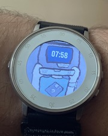

Pebble Time Round Appreciation Page

The Pebble Time Round is my favorite smartwatch ever made. It's super thin, light, and still features a color screen and 2 days of battery life. It's amazing. Anyway, here are some tips for repairing one/replacing the battery:
- You should be able to remove the crystal from the watch with a pry tool or fingernail. It's not too hard, no heating required.
- There are three tiny springs in the PTR. They slightly boost bluetooth connectivity but mine is perfectly fine without them.
- Also make sure to be gentle with the ambient light sensor ribbon cable, which is glued below a small window in the bezel. Make sure to align this properly when you seal up the watch.
- You do not need to solder in a new battery. The mobo has 3 screws that secure it in place that you need to remove. Then, drop in a replacement battery that aligns with the two pins on the bottom of the board. You can secure the batt in place with
some Scotch double-sided tape.
- You can seal up the watch with some Sugru. It's fairly easy to open up again if you choose this option, and the watch didn't really have any water resistance to begin with, so you're not losing that.